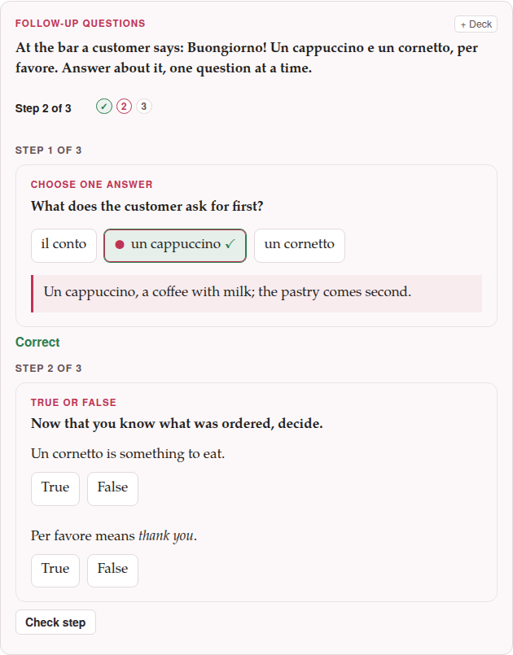

Follow-up questions: a chain of exercises
A follow-up is a chain of exercises answered one after the other. The learner sees the first, checks it, reads what it says, and only then is the second brought in under it; the third builds on the second, and so on. It is the way to ask about a text in stages — the gist first, then a detail, then the word used in a sentence of the learner’s own.
target: it:::exercise follow-upprompt: At the bar a customer says: [Buongiorno! Un cappuccino e un cornetto, per favore.]{tl} Answer about it, one question at a time.explanation-correct: You followed the whole order.explanation-incorrect: Read the sentence once more, slowly: a drink first, then a pastry.::::exercise single-choiceprompt: What does the customer ask for first?- [x] [un cappuccino]{tl}- [ ] [un cornetto]{tl}- [ ] [il conto]{tl}explanation-correct: [Un cappuccino]{tl}, a coffee with milk; the pastry comes second.::::::::exercise true-falseprompt: Now that you know what was ordered, decide.- [Un cornetto]{tl} is something to eat. => true- [Per favore]{tl} means *thank you*. => falseexplanation-correct: [Per favore]{tl} is *please*; *thank you* is [grazie]{tl}.::::::::exercise fill-blanksprompt: Order for yourself, with the words you have just read.content-direction: targettext: [Buongiorno! Un [[drink]] e un [[food]], per favore.]{tl}- [drink] [cappuccino]{tl}- [food] [cornetto]{tl}- [ ] [conto]{tl}explanation-correct: A drink and something to eat, then [per favore]{tl}.:::::::Earlier steps (0)
Step 1 of 3
Step 2 of 3
Step 3 of 3
1. How it is written#
A follow-up is an :::exercise follow-up block whose steps are exercises written inside it, each one colon more on its fences: a step opens with ::::exercise and its type and closes with ::::. That is the dialect’s one rule for a block inside a block — the rule a ::::latex drawing in an exercise already follows — and it goes down with the step: inside a step every fence has one colon more than it would have on its own, so a drawing in a step is :::::latex … :::::. A drawing written as it is on a page of its own, with four colons, is read as the drawing it is and does not end the step; five is how the page writes it, and what Parseh’s prompts teach a chatbot.
:::exercise follow-upprompt: Read the short dialogue, then answer about it, one question at a time.explanation-correct: You followed all of it.explanation-incorrect: Read the dialogue once more, slowly.::::exercise single-choiceprompt: | Where are the two speakers? :::::latex \textbf{binario} $\to$ \textit{platform} :::::- [ ] at home- [x] at the station::::::::exercise true-false- The train leaves at nine. => false:::::::A step is exactly the exercise it would be on its own: everything its type takes — its prompt, its rows, its pictures and recordings, its own explanations — goes inside it, written as that type’s page says, only with the deeper fences. A step may be of any type, a flashcard included, and steps of different types may follow one another.
The follow-up’s own fields come before the first step:
| Field | What it holds |
|---|---|
prompt | what the learner reads first: the text or the dialogue the steps are about |
image, audio | a picture or a recording shared by all the steps, shown with the prompt |
explanation-correct, explanation-incorrect | shown at the end, by the result: every scored step right, or not |
content-direction | the direction the whole chain is laid out in |
A follow-up has no answer rows of its own, needs at least two steps, and cannot hold another follow-up.
2. On the page#
- One step at a time.
- A strip says Step 1 of 3 — and is announced when it changes — with a dot for each step. Only the first step is shown, with Check step under it (Show answer under a card).
- Check step
- marks the step as any exercise is marked, says Correct or Not quite, shows the explanation that answer earned between the steps (right or wrong), and locks the step. Next step then brings the next one into view, under it, and gives it the focus.
- Enter
- does what the button in view does: it checks the step, then goes on.
- Folding.
- From the third step on, the steps before the last two fold into Earlier steps (n), a line that opens on a click. Nothing is lost: each keeps what it answered and what it said.
- The end.
- After the last step the chain says its result in words (2 of 3 steps right) and shows its own explanation.
- Check exercises.
- Every scored step counts as an exercise of the page, one each; a card’s step counts for nothing. A step the learner has not come to is not answered: counted, not judged. A chain left half-way says so, 2 of 4 steps answered, and the learner can go on after pressing Check exercises.

In the editor’s preview the stored answers are shown, Next step goes on without a check, and Show every step unfolds the whole chain.
3. Writing one in the form#
Exercises ▾ → Add exercise… → Follow-up questions — the last tile, after the flashcards — opens a form with the chain’s prompt, pictures, recordings and explanations and, in the middle, a Steps list. Each row says its place (Step 3 of 8), its type, its opening words and, with a small mark, whether it has a picture or a recording, and has:
- a handle (⋮⋮) to drag the step to another place — with a mouse or a finger; with the keyboard, ↑ and ↓ on the handle;
- ↑ and ↓, and a box to type the number of the place it is to go to;
- ✎ Edit, Duplicate and Delete — a deleted step can be taken back with Undo for six seconds;
- ⤴ Put back, which takes the step out of the chain and puts it back on the page as an exercise of its own, after the chain;
- a tick: ticked steps move up or down and are deleted together, and Select all and Select none tick them all or none.
Two ways to put a step in, under the list:
- + New step…
- opens the same grid of types — every tile but the follow-up itself — and then that type’s own form in a frame over the chain’s, titled Step 2 — Fill the blanks, with Add to the chain where the other forms say Insert.
- + From this page…
- lists the exercises the page already has, in order, each with its type and its opening words and a tick, with a filter. Add the ticked ones makes them steps, in the order they are on the page or in the order you ticked them. A box, ticked, says Remove them from the page once they are in the chain: with it, make a chain of these five exercises is one action, and one Undo in the editor takes it all back. An exercise that needs attention, and a follow-up, are listed greyed, and say why.
The preview at the foot of the form draws the chain with every step unfolded and follows each change. Insert exercise writes the block with its fences right; the preview’s ✎ Edit reopens the whole chain with its steps — a step is edited from that list, never on its own. A step you do not touch is written back exactly as it was.
Paste markdown… and Ctrl+V on the grid take a follow-up too. One pasted where a step is being chosen is refused: a follow-up cannot hold a follow-up.
On a phone the rows are 48 px high, and ↑ ↓ ✎ and ⋯ are fingers’ targets; Duplicate, Put back and Delete are under the ⋯.
4. In a deck#
A follow-up is one exercise of the deck: one row in the list, Follow-up questions · 3 steps, which counts once in the deck’s numbers and is scheduled once. + Deck on a page, + Add all exercises and Load from a deck… carry the pictures and recordings of every step with it.
- Making one from several.
- On the deck’s page, tick exercises and press Make a follow-up chain of these…: the chain’s form opens with them as its steps, in the order of the list, and a box offers to take them out of the deck (their study history goes with them). On a page, + Add all exercises has the same button, which makes one chain of the ticked exercises in the page’s order, at once; look it over, or change a step, with ✎ Edit in the deck.
- Studying.
- The steps come one at a time as on a page; the answer bar’s button is Check step (or Show answer), then Next step, and the four ratings come only after the last step, with the focus on Again when any scored step was wrong and on Good when none was. The history keeps steps right / steps beside the rating. Skip in the middle sets the whole chain aside; ✎ Edit opens the chain’s form.
- Cramming.
- A chain counts as right only if every scored step was right; otherwise it comes round again, whole.
A deck that holds a follow-up and is opened by a Parseh older than a0.5.4 is read with that one exercise refused — its import says unknown exercise type: follow-up and skips it; the rest of the deck is imported, and the deck’s own format has not changed.
5. On paper#
The PDF prints a follow-up as one exercise under its label, with its prompt and its shared picture once at the top, then its steps numbered 1., 2., …, each in a lighter frame of its own and laid out exactly as its type is laid out on paper (the matching columns, the writing lines, the true/false marks, the boxes before the choices). A flashcard step prints its two sides one under the other, labelled Front and Back — not as a card to cut and fold. A chain may part between two steps at the foot of a page, never inside one; a step’s picture stays with its step. The answers, the explanations and the pictures of an answer are left out, as for every exercise.
On paper every step is visible at once. A step whose prompt gives away the one before should be written with that in mind.
6. What the parser says#
| Message | What is wrong |
|---|---|
follow-up needs at least two steps | fewer than two ::::exercise steps |
follow-up has no answer rows; write its steps | a - row between the fields: rows belong to a step |
a follow-up cannot hold a follow-up | a step whose type is follow-up |
step 2: … | the second step is wrong: what follows is the message that exercise would give on its own |
step 3: step is missing its closing :::: line | a step never closed with ::::: it ends before the chain’s own ::: |
The whole follow-up is then drawn as an exercise that needs attention, with the list of what is wrong, and neither a deck nor Check exercises takes it.